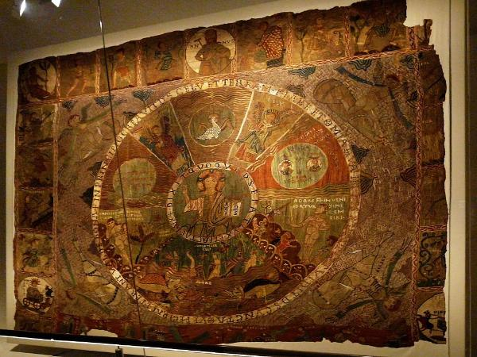

How Big is the Girona Tapestry?

The tapestry currently displayed in the Girona Cathedral measures 358cm X 450cm (11ft 9in X 14ft 9in), but it is clear that the original was significantly larger. At some point in the last thousand years, significant portions of the right-hand and bottom-portions have disappeared. A researcher named Carmen Masdeu i Luz Morata has estimated that the original tapestry was about a third larger than the current version, about 480cm X 540cm.